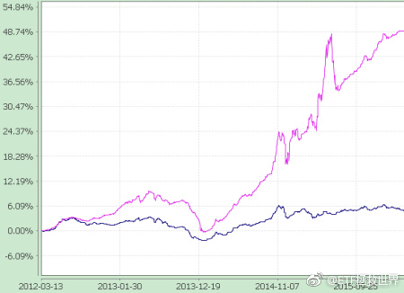

回复@mydxkl:以前毫无办法。其实现在买油气也是没办法的办法。原油不易保存，投资现货品种基本不可能。期货不可以长期持有。比较麻烦。//@mydxkl:远古时代想投资石油，要跑到油田拉2卡车么@ETF拯救世界:在风险平价的体系中，债券上杠杆是必须的。因为它本身收益率略低，上了杠杆才有可能为组合贡献足够的收益。各位生活在一个美好的时代。各种指数基金的出现，为资产配置这件事解决了最大的问题。要知道几年前要做到全面的资产配置简直像做梦一样。举例来说，我2005年想买黄金，还要跑到商场去买实物投资金条。你能想到？现在太幸福了。
在风险平价的体系中，债券上杠杆是必须的。因为它本身收益率略低，上了杠杆才有可能为组合贡献足够的收益。各位生活在一个美好的时代。各种指数基金的出现，为资产配置这件事解决了最大的问题。要知道几年前要做到全面的资产配置简直像做梦一样。举例来说，我2005年想买黄金，还要跑到商场去买实物投资金条。你能想到？现在太幸福了。
回复@守正v出奇:ZJH的104号令《公开募集证券投资基金运作管理办法》规定，公募债基杠杆率不得高于140。2016年8月开始执行。之前可以上到200，现在，140顶天了。哎。//@守正v出奇:还有杠杆率更高的吗？e大@ETF拯救世界:已经锁定杠杆率在135-140的债基了。能不能买，就看市场给不给机会了。两年50%。债券也可以这么风骚的。 